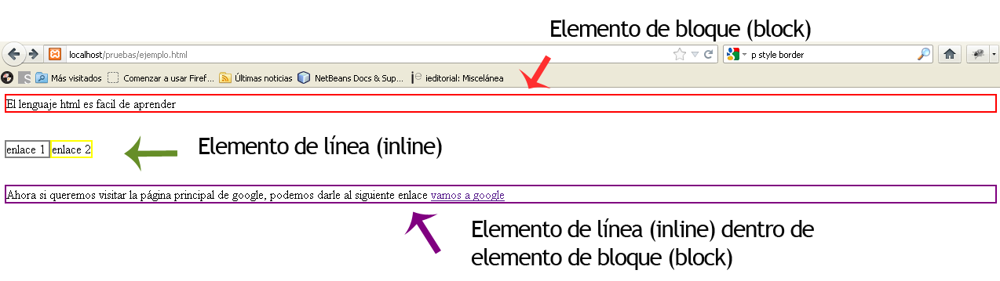

Los elementos en HTML usualmente son elementos "en línea" o elementos "en bloque".
Elemento de Bloque
Un elemento en bloque ocupa todo el espacio de su elemento padre (contenedor), creando así un "bloque".
Estos comienzan en una nueva linea, por ejemplo, un parrafo.
Elemento en Linea
Un elemento en línea ocupa sólo el espacio delimitado por las etiquetas que definen el elemento en línea.
Estos continuan en la misma linea, por ejemplo, un enlace.
Regla de Etiquetas de bloque
Los elementos en linea no deben contener elementos de bloque. Pero si esta permitido que los elementos
de bloque contengan elementos de bloque o en linea

Semánticas
header
El elemento de Header representa un grupo de ayudas introductorias o de navegación. Puede contener
algunos elementos de encabezado, pero también otros elementos como un logo, una sección que aglutine secciones
de encabezados, una formulario de búsqueda o cosas parecidas.
nav
Se utiliza para crear un menu de navegación.
article
Este se destina a distribuir de forma independiente o reutilizable, por ejemplo, en la sindicación.
Podría ser un mensaje en un foro, un artículo de una revista o un periódico, una entrada de blog,
un comentario de un usuario, un widget interactivo o gadget, o cualquier otro elemento independiente del
contenido.
section
Este representa una sección genérica de un documento. Sirve para determinar qué contenido corresponde a
qué parte de un esquema.
footer
Este Representa un pie de página para el contenido de sección más cercano o el elemento raíz de
sección.Un pie de página típicamente contiene información acerca de el autor de la sección,
datos de derechos de autor o enlaces a documentos relacionados.